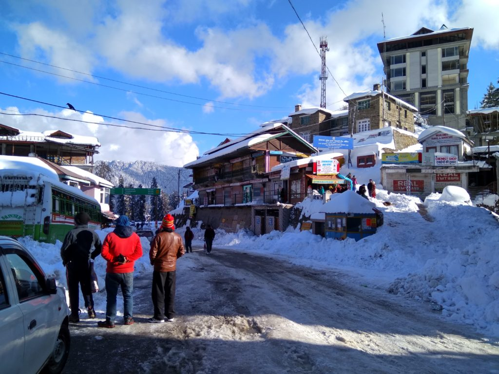

NarkandaGeneralGeographyClimateFloraDemographicsCulture
Demographics
As of 2010 India census, Narkanda had a population of 2712. Males constitute 62% of the population and females 38%. Narkanda has an average literacy rate of 80%, higher than the national average of 59.5%: male literacy is 85%, and female literacy is 72%. In Narkanda, 15% of the population is under 6 years of age.
